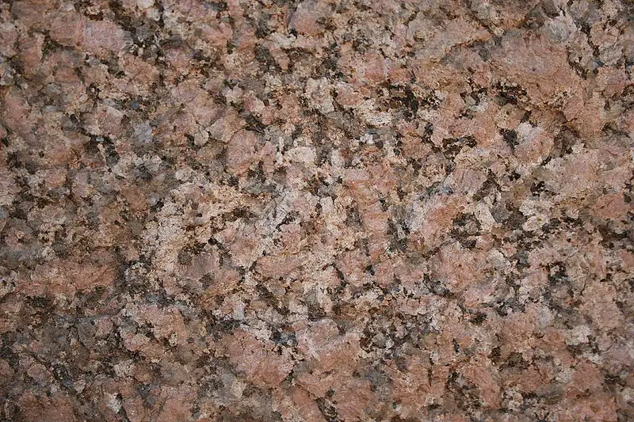
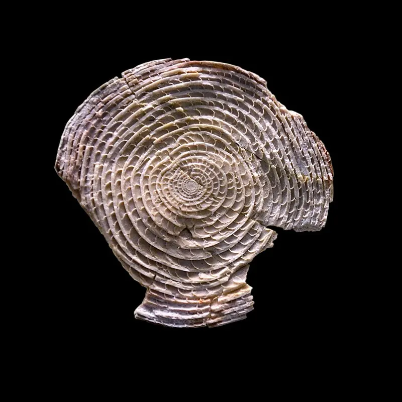
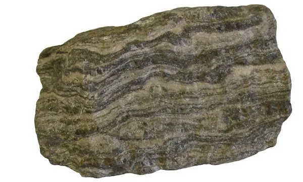
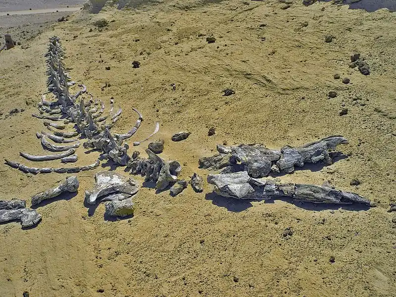

Cambridge Primary Checkpoint · Science 0097 · Stage 6 · Earth and space
Rocks and Fossils
Learn to identify igneous, sedimentary and metamorphic rocks from their features, and how fossils form in sedimentary rock — with diagrams, worked examples and a Checkpoint-style quiz.
British & IGCSE › Checkpoint 6 › Checkpoint 6 Science — Complete Course
- Know that rocks can be sorted into three types — igneous, sedimentary and metamorphic — and describe the features that help you identify each type (6ESp.01).
- Describe how fossils can form in sedimentary rocks (6ESp.02).
- Skills from Thinking and Working Scientifically used on this page: using a key to identify rocks, testing rocks (hardness, water absorption), and recording results in a table.
Key words
| Word / phrase | Meaning / use |
|---|---|
| rock | صخر — a natural solid made of one or more minerals |
| mineral | معدن — a natural solid substance; rocks are made of minerals |
| crystal | بلورة — a piece of mineral with flat faces and straight edges |
| grain | حبيبة — a small piece of rock or mineral, such as a grain of sand |
| igneous rock | صخر ناري — forms when melted rock (magma or lava) cools and becomes solid |
| sedimentary rock | صخر رسوبي — forms from layers of sediment pressed and stuck together |
| metamorphic rock | صخر متحول — forms when heat and pressure change an existing rock without melting it |
| magma / lava | صهارة / حمم — melted rock underground / melted rock on the surface |
| sediment | رواسب — small pieces of rock, sand, mud and shells that settle at the bottom of water |
| layer (stratum) | طبقة — a flat band of rock; many layers are called strata |
| porous | مسامي — has tiny holes, so it soaks up water |
| fossil | حفرية / أحفورة — the remains or traces of a living thing from long ago, preserved in rock |
1. What is a rock?
A rock is a natural solid made of minerals. If you look at a rock with a hand lens you will see that it is made either of crystals that fit tightly together, or of grains (small pieces) that are stuck together. How the crystals or grains look tells you how the rock was made — and that is how scientists sort rocks into three groups.
| Rock type | How it forms (the short version) | Clue in the name |
|---|---|---|
| Igneous | Melted rock (magma or lava) cools and becomes solid | 'Ignis' means fire — it was once melted by great heat |
| Sedimentary | Layers of sediment are buried, pressed and cemented together | 'Sediment' — bits that settle at the bottom of water |
| Metamorphic | An existing rock is changed by heat and pressure without melting | 'Metamorphosis' means a change of form |
2. Igneous rocks
Deep underground the rock is so hot that some of it melts. This melted rock is called magma. When magma reaches the surface (for example from a volcano) it is called lava. When magma or lava cools down it solidifies (becomes solid) and forms igneous rock.
- Interlocking crystals — the crystals grow into each other as the liquid cools, so there are no gaps between them.
- Crystals point in random directions — they are not in layers or bands.
- Usually hard and not porous (water does not soak in), because there are no gaps between the crystals.
- No fossils — anything living would have been destroyed by the great heat of the melted rock.
- Crystal size tells you the cooling speed: magma that cools slowly deep underground has time to grow large crystals (granite); lava that cools quickly on the surface forms small crystals (basalt). Lava that cools extremely quickly may form glass with no crystals at all (obsidian).
| Igneous rock | Where it cooled | What you see |
|---|---|---|
| Granite | Slowly, deep underground | Large crystals you can see easily (often pink, white and black); very hard |
| Basalt | Quickly, on the surface (lava) | Dark grey or black; crystals too small to see without a lens |
| Obsidian | Very quickly, on the surface | Black and shiny like glass; no crystals |
| Pumice | Quickly, from frothy lava full of gas | Full of holes from gas bubbles; so light it can float |
The ancient Egyptians cut granite at Aswan for obelisks and statues because it is so hard and lasts for thousands of years. Granite is an igneous rock — look closely at an Aswan statue and you can see its large interlocking crystals.

3. Sedimentary rocks
Rivers carry small pieces of rock, sand, mud and shells into lakes and seas. These pieces, called sediment, settle at the bottom in flat layers. Over thousands and millions of years new layers bury the older ones. The weight of the layers on top presses (compacts) the lower layers, squeezes out the water, and natural minerals cement the grains together. The sediment slowly becomes sedimentary rock.
- Made of grains, often rounded (they were rubbed smooth while being carried by water or wind).
- Found in layers (strata).
- May contain fossils.
- Often porous — there are tiny gaps between the grains, so the rock soaks up water.
- Often soft or crumbly — grains can be rubbed off with a finger or scratched with a nail.
| Sedimentary rock | Made from | What you see |
|---|---|---|
| Sandstone | Sand grains | Gritty feel; grains you can see; porous |
| Limestone | Mostly shells and skeletons of sea creatures | Often contains fossils; fizzes with acid such as vinegar |
| Chalk | Tiny shells of microscopic sea creatures | White, soft, leaves a mark on your fingers |
| Mudstone / shale | Mud and clay | Very fine grains; shale splits into thin layers |
| Conglomerate | Pebbles cemented with sand | Rounded pebbles stuck together |
Most of the blocks of the Pyramids of Giza are limestone, a sedimentary rock. If you look closely, you can see thousands of small round fossils called nummulites — the shells of tiny sea creatures. This tells us that the Giza area was once under the sea.

4. Metamorphic rocks
When a rock is buried very deep, or is close to hot magma, it is heated and squeezed. The rock does not melt, but its minerals change and grow into new crystals. The new rock is a metamorphic rock. Any type of rock — igneous, sedimentary or even another metamorphic rock — can be changed in this way.
- Made of crystals, often lined up in bands, stripes or thin sheets because the rock was squeezed in one direction.
- Usually very hard and not porous.
- Fossils are usually destroyed (squashed and changed) by the heat and pressure.
- Remember: heat and pressure, but NOT melting. If the rock melts, it becomes magma, and the rock that forms later is igneous.
| Metamorphic rock | Formed from | What you see |
|---|---|---|
| Marble | Limestone | Sparkly, sugary-looking crystals; can be white or coloured; no fossils |
| Slate | Mudstone or shale | Dark grey; splits into thin flat sheets (used for roof tiles) |
| Quartzite | Sandstone | Very hard; sand grains have joined into crystals |
| Gneiss | Granite and other rocks | Clear light and dark bands of crystals |

5. Identifying a rock: use a key
In Checkpoint you may be given a key or asked to use the features of a rock to name its type. Look first for layers, grains and fossils (sedimentary). If there are crystals, check whether they are lined up in bands (metamorphic) or random and interlocking (igneous).
Scientists also use simple tests:
| Test | How to do it | What it tells you |
|---|---|---|
| Look | Use a hand lens to look at the grains or crystals | Rounded grains → sedimentary; random interlocking crystals → igneous; crystals in bands → metamorphic |
| Scratch (hardness) | Try to scratch the rock with a fingernail, then an iron nail | Soft rocks that scratch easily are often sedimentary (e.g. chalk); igneous and metamorphic rocks are usually hard |
| Water drop (porosity) | Drop water on the rock, or weigh the rock dry and again after soaking it | If the water soaks in (or the mass increases), the rock is porous — usually sedimentary |
| Rub | Rub the rock with a finger or another rock | Grains rubbing off → sedimentary |
- Wear eye protection when scratching or breaking rocks — small chips can fly off.
- Wash your hands after handling rocks and do not taste them.
6. Fossils
A fossil is the remains or trace of a plant or animal that lived a very long time ago (usually millions of years), preserved in rock. Fossils can be:
- body fossils — the hard parts of a living thing, such as bones, teeth, shells or wood, that have been turned into rock;
- trace fossils — signs that a living thing was there, such as footprints, burrows or droppings;
- moulds and casts — a shell dissolves and leaves a hole the same shape (a mould); if minerals later fill the hole, they make a rock copy of the shell (a cast).
How a fossil forms in sedimentary rock
- A plant or animal dies and falls to the bottom of a sea, lake or river.
- The soft parts rot away or are eaten. The hard parts (bones, teeth, shells) are left.
- The remains are quickly buried by sediment such as mud or sand. This protects them from animals, from rotting and from being broken by moving water.
- More and more layers of sediment build up on top. Their weight presses the lower layers and they slowly turn into sedimentary rock.
- Water containing dissolved minerals seeps through the rock. The minerals slowly replace the bone or shell, making a rock copy — a fossil. (Or the shell dissolves and leaves a mould.)
- Millions of years later, movements of the Earth lift the rock up and erosion (wind, rain, rivers) wears away the rock above, so the fossil is exposed at the surface where people can find it.
Why are fossils found in sedimentary rocks?
| Rock type | Fossils? | Reason |
|---|---|---|
| Sedimentary | Yes, often | Sediment settles gently and buries remains without destroying them |
| Igneous | No | It forms from melted rock — the great heat destroys any remains |
| Metamorphic | Rarely — usually destroyed | High heat and pressure squash and change the remains |
Fossils are rare. Most living things are eaten or rot away before they can be buried, and animals with no hard parts (such as worms or jellyfish) hardly ever leave fossils.
What fossils tell us
- What lived long ago — including living things that are now extinct, such as dinosaurs and ammonites.
- What the place was like — sea shells in desert rock show that the area was once under the sea. At Wadi El-Hitan (the Valley of the Whales) in Fayoum, Egypt, there are skeletons of ancient whales, around 40 million years old, in what is now desert.
- Which rocks are older — sediment is laid down one layer on top of another, so in undisturbed rock the lowest layers are the oldest and fossils in them lived earlier than fossils in the layers above.

- الصخر الناري (igneous): بيتكوّن لما الصهارة أو الحمم تبرد وتتجمد — بلورات متداخلة، مافيهوش طبقات ولا حفريات.
- الصخر الرسوبي (sedimentary): رواسب بتترسب في طبقات وتتضغط وتلتصق — حبيبات وطبقات وممكن فيه حفريات.
- الصخر المتحول (metamorphic): صخر اتغير بالحرارة والضغط من غير ما يدوب — بلورات في خطوط أو أشرطة.
- الحفريات بتتكوّن في الصخور الرسوبية بس تقريبًا، لأن الحرارة في الصخر الناري والمتحول بتدمرها.
Worked examples
Worked example 1 — Three rock samples are described below. Name the type of rock for each one. [3 marks]
| Sample | Description |
|---|---|
| X | Hard; large crystals of different colours that fit tightly together in random directions |
| Y | Layers of rounded sand grains; soaks up water; a shell is visible |
| Z | Very hard; crystals lined up in dark and light stripes |
- X has random interlocking crystals and no layers → igneous (1 mark).
- Y has layers, rounded grains, is porous and has a fossil → sedimentary (1 mark).
- Z has crystals in bands → metamorphic (1 mark).
Common mistake: calling Z igneous because it has crystals. Ask yourself: are the crystals random (igneous) or lined up (metamorphic)?
Worked example 2 — Granite and basalt are both igneous rocks. Granite has large crystals and basalt has small crystals. Explain this difference. [2 marks]
- Granite formed from magma that cooled slowly deep underground, so the crystals had time to grow large (1 mark).
- Basalt formed from lava that cooled quickly on the surface, so the crystals did not have time to grow (1 mark).
Common mistake: writing 'granite is bigger'. The marks are for linking cooling speed to crystal size.
Worked example 3 — Describe how the skeleton of a fish could become a fossil. [3 marks]
- The fish dies, sinks to the sea bed and the soft parts rot away (1 mark).
- The bones are quickly buried by layers of sediment, which are pressed together into sedimentary rock (1 mark).
- Minerals slowly replace the bones, making a rock copy of the skeleton (1 mark).
Exam tip: use the key words buried, sediment, layers, minerals replace. Three marks means three separate points.
Worked example 4 — Omar wants to find out which rock is the most porous. He weighs each rock dry, soaks it in water for one hour, then weighs it again.
| Rock | Mass when dry (g) | Mass after soaking (g) |
|---|---|---|
| Chalk | 50 | 58 |
| Granite | 50 | 50 |
| Sandstone | 50 | 54 |
(a) Work out the mass of water soaked up by the sandstone. [1 mark] (b) Which rock is the most porous? Explain your answer. [1 mark] (c) Give one thing Omar kept the same to make this a fair test. [1 mark]
- (a) 54 − 50 = 4 g of water.
- (b) Chalk — it soaked up the most water (58 − 50 = 8 g).
- (c) Any one: the same starting mass of rock (50 g) / the same soaking time (one hour) / the same water.
Worked example 5 — A fossil shark tooth is found in a rock. (a) What type of rock is it most likely to be? (b) Give a reason. [2 marks]
- (a) Sedimentary (1 mark).
- (b) Fossils form when remains are buried in sediment; the heat in igneous and metamorphic rocks would destroy them (1 mark).
- Saying metamorphic rocks form by melting. They form by heat and pressure without melting. Melting leads to magma and then igneous rock.
- Saying igneous rocks have layers. Layers are a feature of sedimentary rock (bands of crystals = metamorphic).
- Mixing up grains (pieces stuck together — sedimentary) and crystals (grown together — igneous and metamorphic).
- Writing that a fossil is 'a dead animal'. A fossil is the remains or trace preserved in rock, usually millions of years old.
- Forgetting that the remains must be buried quickly — otherwise they rot or are eaten.
- Thinking the top layer of rock is the oldest. In undisturbed layers the bottom layer is the oldest.
- Name the rock type from a description, a picture or a table of features — look for the key words: crystals, interlocking, layers, grains, fossils, bands.
- Use or complete a key — follow each question in order; do not jump to the end.
- Explain a feature: always link the feature to how the rock formed (e.g. small crystals → cooled quickly).
- Put the stages of fossil formation in order, or describe them — buried → layers → rock → minerals replace → uplift and erosion.
- Investigation questions: variables in a porosity or scratch test, reading a results table, working out a change in mass (after − before).
- One mark usually needs one clear idea. For 'explain' questions give the idea and the reason.
Practice
- Igneous = melted rock cooled → random interlocking crystals, no layers, no fossils. Slow cooling = large crystals; fast cooling = small crystals.
- Sedimentary = sediment in layers, pressed and cemented → grains, layers, often porous and soft, may contain fossils.
- Metamorphic = existing rock changed by heat and pressure without melting → hard, crystals in bands, no fossils.
- Fossils form when remains are buried quickly in sediment, layers build up into rock and minerals replace the hard parts; uplift and erosion expose them.
- In undisturbed layers the lowest layer is the oldest.
All pages in this course
Start here
- Checkpoint 6 Science: The Test and How to Prepare
- Thinking and Working Scientifically: Investigations, Variables, Tables and Graphs
Biology
- The Heart and Circulatory System
- The Lungs and Respiratory System
- Human Reproductive System and Puberty
- Diseases, Hygiene and the Body's Defences
- Food Chains, Food Webs, Energy and Toxins
Chemistry
- Properties of Substances: Melting and Boiling Points, Gases, Conductors
- Reversible Changes and Dissolving
- Boiling and Evaporation
- Chemical Reactions: Reactants, Products and Evidence
Physics
- Mass, Weight and Gravity
- Force Diagrams and Forces on Moving Objects
- Floating and Sinking
- Light: Reflection and Refraction
- Electric Circuits, Symbols, Series and Parallel
Earth and space
Practice tests